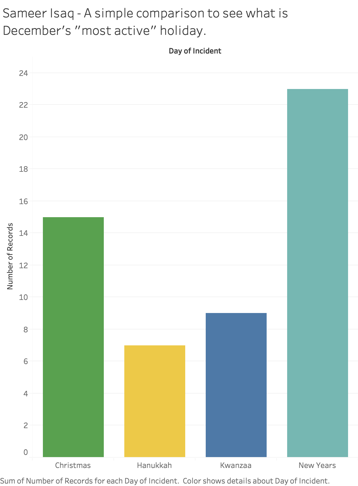
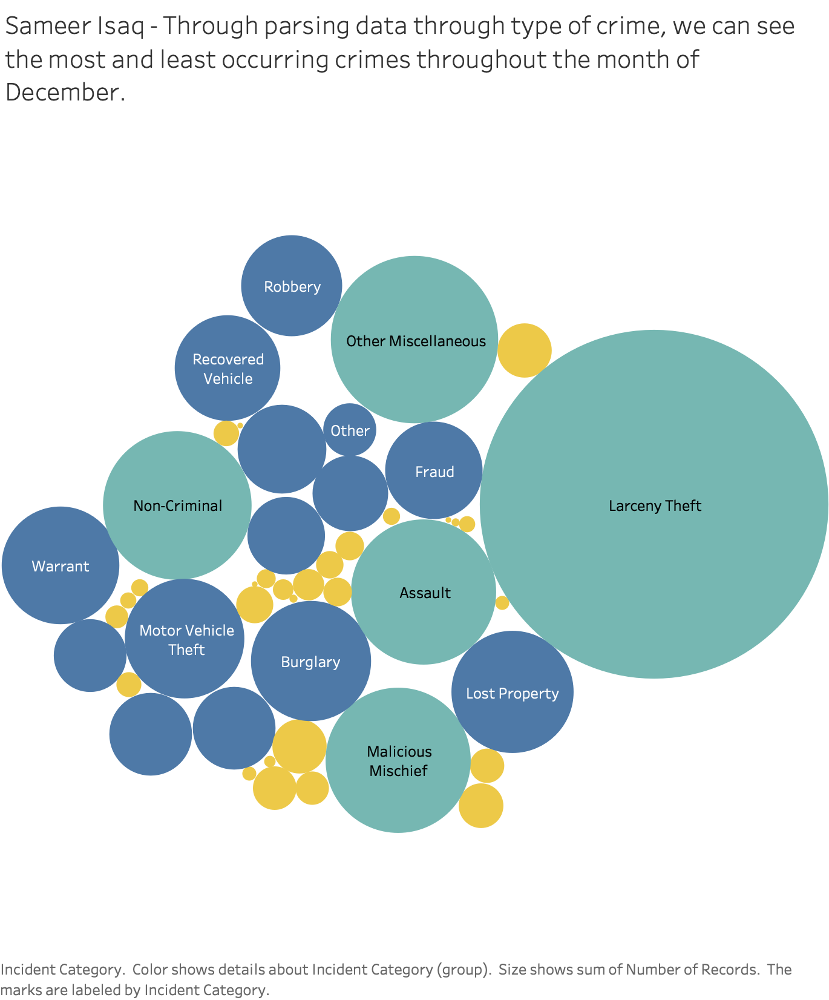
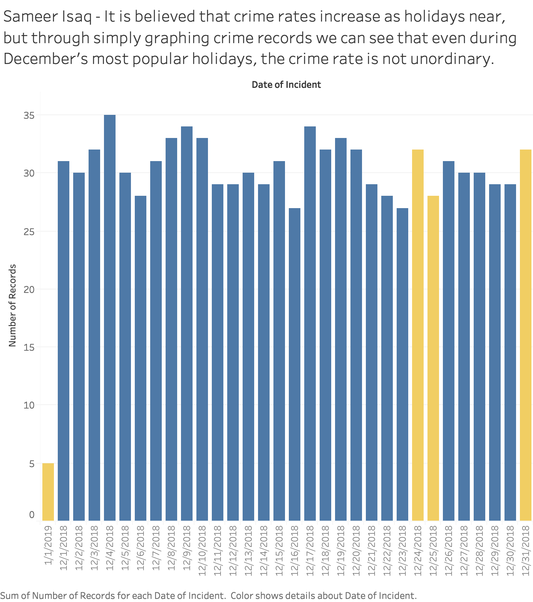

If appropriate, provide a brief discussion of how to interpret this visualization (e.g. how the data is encoded) and how to interact with this visualization. Some of this discussion may not be necessary depending on the legends provided with the visualization.
There isn't much interaction to be had with the visualization but it is simply a bar chart to represent the recorded crime on the major holidays within the month of December.
If appropriate, provide a brief discussion of the primary goal and findings of the visualization, any challenges encountered creating the visualization, and any other context as required by the assignment.
The primary motivation behind this design was to see which holiday had the most criminal activity. In the visualizations, for holidays such as Christmas and New Years, the data reflected is actually a summary of crime records on their eve as well as the actual day.
As we can see, New Years is the most active holiday.
A real challenge I encountered with this assignment is getting explanations. I'm just entering the world of datavis and there are plenty of examples on how something is created, but not many break downs that explain function calls and/or syntax. Having to put it
together was very difficult.
If appropriate, provide credit for the dataset, any code used, and design inspirations here. Unsufficient discussion here is a violation of the academic honesty policy and may result in an F grade for the assignment or the entire course.
Resource 1
This resource was used to label the X & Y axis appropriately. Towards the bottom of the example code the user shows how to
label axis.
Resource 2
This resource was used to model my entire graph off of. It is essentially the skeleton for which everything is made.
These are the three Tableau visualizations that I attempted to recreate using D3:
1.) A chart representing the popularity of crimes in December:

2.) A bar graph representing the most crime-ridden holiday in December:

3.) A bar graph indicating that, on holidays, crime rates are not abnormal:

| Done? | Letter | Justification |
|---|---|---|
| D | There are 3 visualizations from Tableau, there are 2 different encodings for the data, 2 different perspectives, colors for data, labels, and a caption. This accounts for every requirement outlined on the homework to achieve a D. | |
| C | I believe I accomplished a C level worth of work for this first assignment. I used the same visualization technique and encoding as my first prototype, which was required, and I included everything that could be found in the prototype, with the exception of color. | |
| B | Not implemented. | |
| A | Not implemented. |
Any additional context you want to provide regarding functionality and grading can be included here. This may include any challenges or bugs you ran into that prevented you from implementing additional functionality.
I don't think I prioritized my time well. I focused on fairly pointless functionality rather than trying to make my only visualization a bit more interactive. Again, the main challenge I encountered was finding examples with explanations rather than code for me to try to decypher.